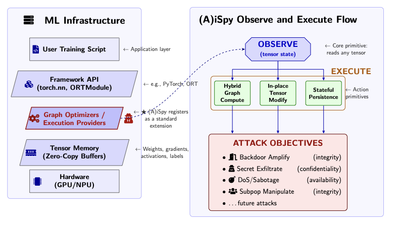
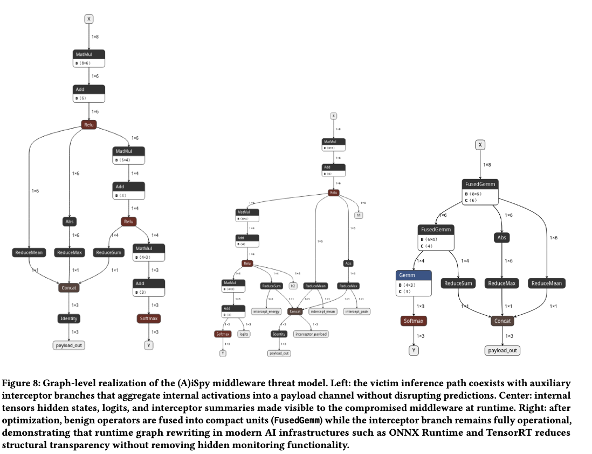

(A)iSpy
Parasitic Trojans for Machine Learning Infrastructure
ML pipelines audit data and model artifacts, but the execution environment underneath them is trusted implicitly. (A)iSpy exploits that blind spot: a parasitic infrastructure Trojan that registers as an ordinary runtime extension and subverts training and inference through an active observe-and-execute paradigm. Living inside the computation graph, it watches transient tensor state and performs targeted manipulations at negligible overhead. Against confidentiality, it recovers the critical training hyperparameters and covertly exfiltrates them through model weights or output logits. Against integrity, it acts as a gradient amplifier, converting otherwise ineffective data poisoning into a working backdoor once a steganographic trigger appears. Subpopulation label flipping, availability disruption, and inference-stage manipulation are demonstrated as further attacks. Evaluated malware scanners do not flag it, since public rule sets have no coverage for ML runtime Trojans, and the poisoned inputs and compromised models slip past state-of-the-art inspection tools. Implemented in the ONNX Runtime training and inference engines.